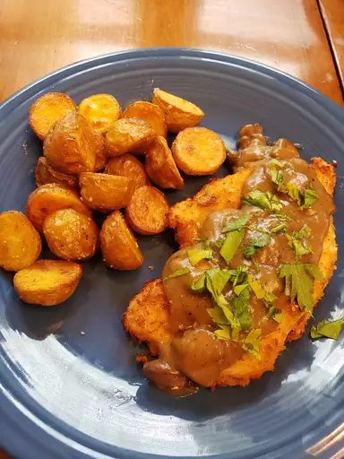

Chicken Marsala Milanese

For me, there's nothing better than a thin, crispy, pan-fried cutlet of meat, unless that already awesome edible is topped with a rich, savory mushroom Marsala sauce, which takes everything up to a whole new level. By the way, the sauce being discussed will take anything up to a whole new level. So even if pan-fried, crispy cutlets aren't your thing, I hope the sauce makes it into your permanent recipe repertoire.
This unbeatable combination of taste and texture would be fantastic served next to anything, but I highly recommend you go with some version of the simple arugula salad I displayed in the video. The bitter greens, dressed with something acidic, really cuts through all that richness and keeps our palate on point until the last bite. But no matter what your serve with yours, I really do hope you give this a try soon. Enjoy!
What do you need?
For Chicken Milanese:
- 2 (6 ounce) skinless, boneless chicken breast halves
- kosher salt and freshly ground black pepper to taste
- 1 pinch cayenne pepper, or to taste
- ½ cup all-purpose flour, or as needed
- 1 large egg, beaten
- 1 ½ cups panko bread crumbs, divided, or more as needed
- 1 ounce Parmigiano-Reggiano cheese, freshly grated (Optional)
- ¼ cup olive oil for frying
For the Marsala Sauce:
- 3 tablespoons unsalted butter
- 8 ounces brown mushrooms, sliced
- salt to taste
- 2 tablespoons all-purpose flour
- ½ cup dry Marsala wine
- 2 teaspoons lemon juice
- 2 cups chicken broth
- 1 pinch ground black pepper
- 1 pinch cayenne pepper
- 1 tablespoon chopped flat-leaf (Italian) parsley
How to make it?
- Place chicken breasts between two pieces of plastic wrap, or a cut-open zip-top bag, and use a meat pounder to flatten the meat to about 1/4-inch thickness.
- Season chicken on both sides of the chicken with salt, pepper, and cayenne, and transfer to a large plate. Sift flour over both sides of the chicken until the surface is completely coated. Transfer to a clean plate.
- Brush away any excess flour from the plate. Sprinkle about 1/4 inch of panko onto the surface of the plate.
- Pour the egg over the floured chicken and use a brush to paint evenly over the meat. Flip and repeat on the other side. Once chicken has been thoroughly coated with the egg, pick up each piece with tongs, letting the excess egg drip off, and place on the plate of panko.
- Generously sprinkle panko over the top of the chicken and press in with your hands or tongs. Flip the chicken over, and sprinkle more panko over the top. Repeat until the chicken is well breaded all over.
- Sprinkle a light coating of the Parmigiano-Reggiano over the top of the chicken and press lightly into the breading with your hands. Flip and repeat on the other side.
- Transfer to a plate sprinkled with more panko. Cover with plastic wrap and keep in the refrigerator until you're ready to pan-fry.
- To make the sauce, melt butter in a saucepan over high heat; add the mushrooms and a large pinch of salt. Cook mushrooms, stirring occasionally, until well browned, 5 to 6 minutes. Reduce heat to medium and stir in flour. Cook, stirring occasionally, for another 2 minutes.
- Pour in Marsala and lemon juice and use a spatula or spoon to scrape any caramelization from the bottom of the pan. Pour in chicken broth and raise heat to medium-high. Season with black pepper and cayenne and bring to a simmer. Cook the mixture, stirring occasionally, until it reduces and thickens slightly. Keep hot until needed or let cool and reheat when needed. Before serving, some freshly chopped parsley can be stirred in.
- Heat olive oil in a nonstick skillet over medium-high heat. Add the breaded chicken to the pan and reduce the heat to medium. Cook until golden brown and cooked through, about 3 minutes per side. Serve immediately with Marsala sauce underneath or spooned over the top.